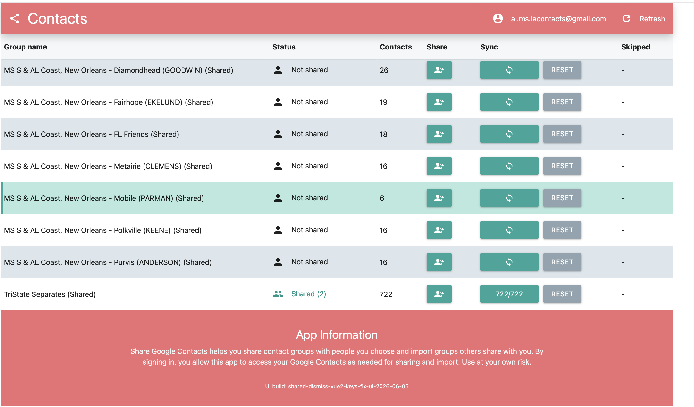
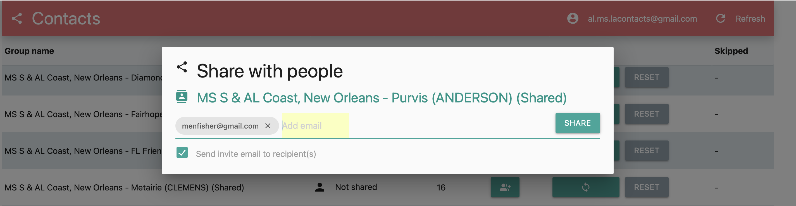
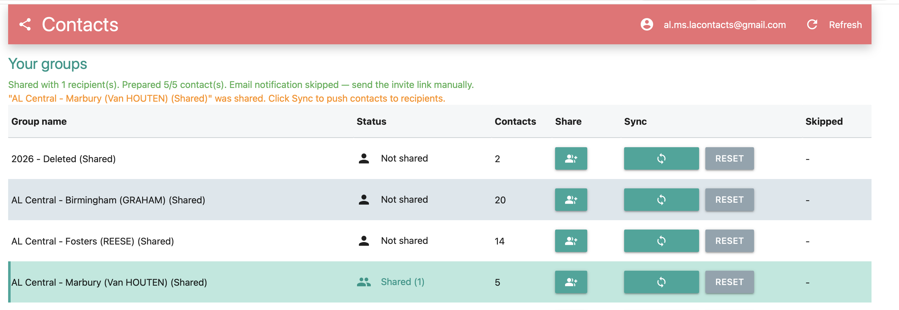
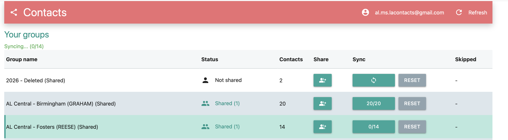
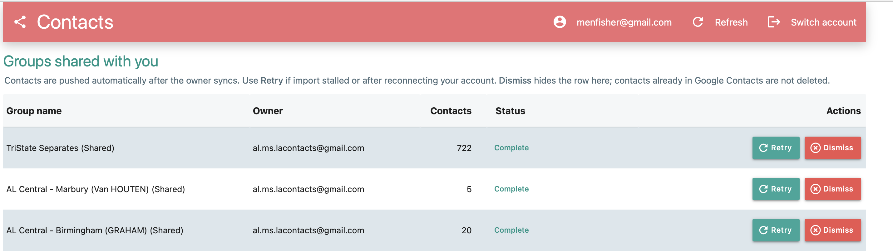
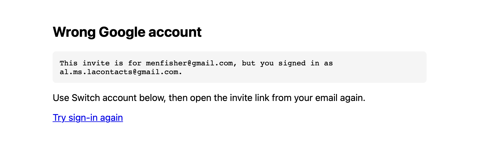
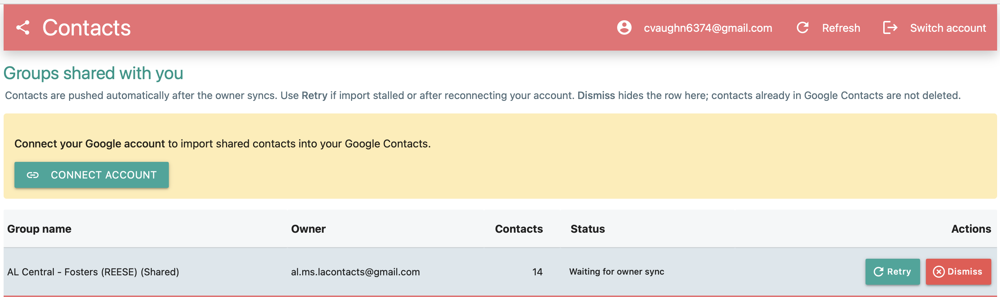
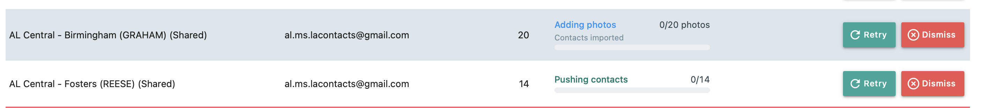
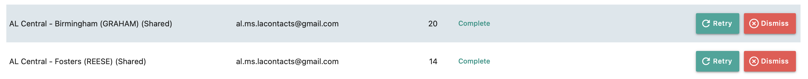
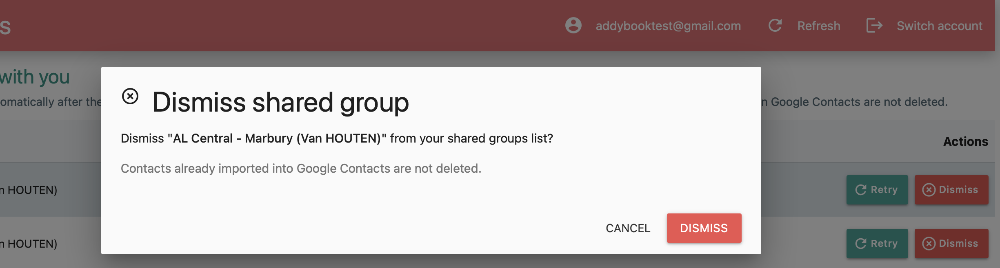

How to share contact groups with other people — and how to receive them — explained in plain language, one screen at a time.
The Sharing app is a website with two sides. If you share your contacts with others, you are the Owner. If someone shares contacts with you, you are a Recipient. This manual covers both. Read the chapters for your role, or all of them if you'll do both. Throughout, button names appear in color and figures show you where things are.
Everything in the Sharing app happens in your web browser — there's nothing to install. You open a web address, sign in with Google, and the app shows you either your own groups (as an Owner) or the groups others have shared with you (as a Recipient).
The Owner picks one of their Google contact groups, chooses who should receive it, and sends the contacts over. The Recipient opens an invite link, connects their Google account, and the shared contacts appear in their own Google Contacts. Updates the Owner makes later can flow to recipients automatically.
There is no "Sign in" button to hunt for. When you open the app, it sends you straight to Google to sign in, then brings you back. The app's name shows simply as Contacts in the top bar.
Across the top of every page is a slim bar showing the app name, your signed-in Google email, and a Refresh link to reload. Recipients also get a Switch account link there, for when they need to sign in as a different person. At the very bottom, an App Information note explains that the app uses your Google Contacts only as needed for sharing and importing.
To begin as an Owner, open the app's main web address in your browser and sign in with Google when prompted. The address is:
https://share-contacts-7frzetx7sa-uc.a.run.app/(If you run your own Share server, use your own address instead — it ends in
.run.app/.)
You don't have to remember the address. In the ContactsFreeShare desktop app, the Share Contacts menu item opens this same Sharing app in a new browser tab. (It appears once you're connected to Google and signed in as the Editor.)
Once you're signed in, you land on the Your groups screen.

This table lists your Google contact groups (labels). For each one you'll see:
| Column | What it shows |
|---|---|
| Group name | The name of the Google contact group. |
| Status | Shared (N) when it's shared with N people, or Not shared. |
| Contacts | How many people are in the group. |
| Share | A button that opens the sharing window. |
| Sync | The button that sends contacts to recipients, plus a Reset button. |
| Skipped | A number if any contacts were skipped, otherwise a dash. |
Sharing happens in two steps: first you share a group with the people you choose, and then you sync to actually send the contacts (Chapter Four). Start by clicking the Share button on the group's row. A window titled Share with people opens.

Type a recipient's email address into the Add email box and press Enter; it becomes a small chip. Add as many as you like. The Send invite email to recipient(s) checkbox is ticked by default. When you're ready, click Share (it briefly reads Sharing...). Anyone you've already shared with appears in a Collaborators list inside the same window.
On a server you host yourself, the app does not send the email for you. Instead, when you click Share with the invite box ticked, your computer's email program opens a ready-made draft (subject Share Google Contacts) containing the invite link — you just press Send. If you prefer, untick the box and send the link yourself. The link always looks like this, with the recipient's address on the end:
https://your-share-app-address/?mode=shared&email=recipient@example.comAdding a recipient only puts them on the list. The contacts don't move until you click Sync. After you share, the app reminds you with a message like "… was shared. Click Sync to push contacts to recipients."

Once a group has at least one recipient, click the Sync button on its row to send the contacts. The app prepares your contacts and delivers them to each recipient in the background. While it works, the button shows a running count such as 5/25, and a green line above the table reports progress like "Syncing... (5/25)."

You can sync again any time you change the group — re-syncing updates the shared copy for everyone. If a recipient hasn't connected their account yet, you'll see a note such as "Ready — waiting for recipient to connect," which simply means their contacts are staged and will land as soon as they connect (Chapter Seven).
The grey Reset button beside Sync clears the sync state for that group (it does not delete anyone's contacts) and asks you to confirm first. If the Skipped column shows a number, click it to open a Skipped Contacts list explaining which entries couldn't be sent and why.
To change who receives a group, open its Share with people window again. Everyone currently on the list appears under Collaborators. To stop sharing with someone, click the Remove button next to their email; the app confirms with "Removed … from this group." When you remove the last person, the group's status returns to Not shared.
Taking someone off the list stops future updates, but it does not reach into their Google account to delete contacts they already received.
If someone has shared contacts with you, you'll receive an invite link. Open it in your web browser. It looks like this, usually with your email address on the end:
https://their-share-app-address/?mode=shared&email=you@example.comWhen you open the link, the app sends you to Google to sign in. Sign in with the same Google account the invite was sent to — this is the most common point of confusion. After signing in, you land on the Groups shared with you screen.

The table lists each shared group, who it's from, how many contacts it holds, its current status, and two action buttons: Retry and Dismiss (covered in the next chapters).
If you signed in with a different account than the invite, the app shows a red notice like "This invite is for … but you are signed in as …," with a Switch account link. Click it, sign in with the correct account, and open the invite link again.

Before contacts can be added to your address book, you give the app permission to write to your Google Contacts. If a yellow banner appears reading Connect your Google account, click the Connect account button and approve access on the Google screen that follows. When you return, you'll see "Account connected," and the import usually starts on its own.

If you connected a while ago and permission has lapsed, you may instead see a red Reconnect your Google account banner; click Reconnect account and approve again. This is normal and just refreshes the permission.
Once you're connected, the app adds the shared contacts to your Google account automatically. The Status column tells you where things stand and shows a progress bar with a running count such as 5/25.

You may see the status move through a few stages — Waiting for owner sync, Importing contacts or Pushing contacts, then Adding photos — and finally Complete in teal when everything has arrived. At that point the contacts are in your Google Contacts, usually in a group whose name ends with (shared).

If progress seems stuck, or you've just reconnected your account, click Retry on that group's row to nudge the import along. It's safe to press more than once.
If you no longer want a shared group cluttering your list, click Dismiss on its row. A window titled Dismiss shared group asks you to confirm. Dismissing only hides the row from this list — it does not delete the contacts already imported into your Google Contacts.

Most snags are about signing in or which account you used.
If the page shows an error and a Sign in again link, click it — your
session likely expired. If the app says you're "viewing your own contact groups instead
of shared invites," you opened the plain address instead of the invite link; reopen the
link that ends in ?mode=shared. If nothing is shared with you and you expected
something, make sure you signed in with the exact account the invite was sent to — use
Switch account, then open the invite again (an incognito or private browser
window helps avoid signing in as the wrong person).
After Google sign-in, you might occasionally land on a plain page titled Login failed, Wrong Google account, or Connect failed. Each offers a Try sign-in again link; follow it and sign in carefully with the right account. And whenever the screen looks out of date, the Refresh link in the top bar reloads the latest status.
Here's what the words in the Status column mean.
| Status | Meaning |
|---|---|
| Not shared | (Owner) The group hasn't been shared with anyone yet. |
| Shared (N) | (Owner) The group is shared with N people. |
| Waiting for owner sync | (Recipient) The owner shared the group but hasn't pressed Sync yet. |
| Connect account to import | (Recipient) You need to connect your Google account first. |
| Ready to import / Queued | Contacts are staged and lined up to be added. |
| Importing / Pushing contacts | Contacts are being added to the account right now. |
| Adding photos | The contacts are in; their photos are being added. |
| Complete | Everything has arrived in Google Contacts. |
| Up to date | Nothing new to send; the shared copy already matches. |